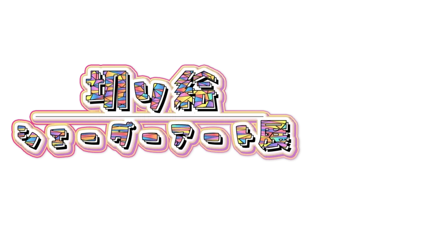
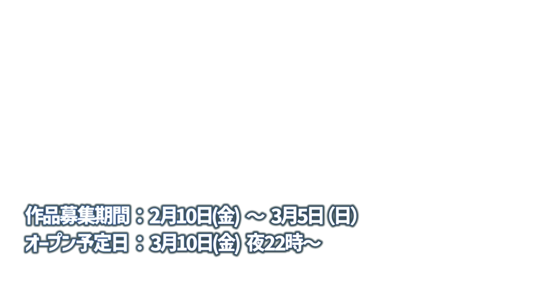

来場方法
VRChatを起動する
VRChatをお持ちで無い場合は下記より取得、セットアップしてください
▼
ワールドを探す
VRChatのメニューからWorldsを選択
Search Worlds(ワールド検索欄)に Kirie と入力して検索
Kirie Shader Art Exhbition という名称のワールドが会場です
▼
ワールドに入る
ワールドを選択後、Joinボタンでワールドに入場できます
切り絵シェーダーアート展ってなに？
平面なのに奥行を感じる、不思議な「切り絵シェーダー」で表現された作品が一堂に会するアート展です。
切り絵シェーダーは何枚もの画像を立体的に重ねることで、イラストや写真のより豊かな表現が可能となりました。
ひいては、バーチャル空間ならではの表現方法の１つとして、様々な人たちのアイディアや表現方法が見たいと思い、本イベントの開催に至りました。
本イベントでは、通常のイラストだけではなく写真の使用も可能となっておりますので、皆さま奮ってご参加下さい。

制作スタッフ

おにさわ
シェーダー制作/顔出しパネル制作/Webサイト運営/ワールド制作・管理

犬の会長
企画/営業/広報/進行管理/各種規約制作/タイトルロゴ制作/プロモーション動画撮影＆編集

_mo_mo_
コンセプトアート/イラスト

kame404
ワールドモデリング/Webサイト制作/入稿テンプレート制作/Git管理